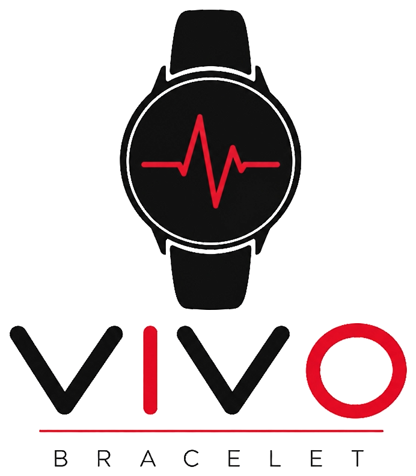
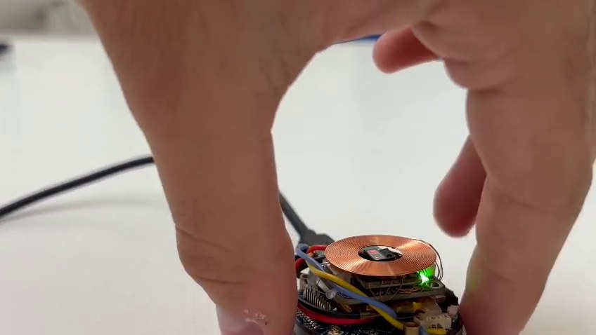
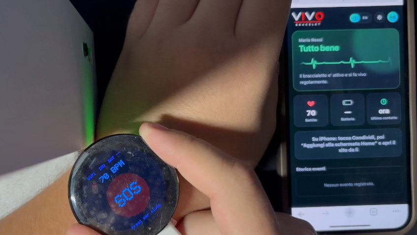

Riconosce da solo le cadute degli anziani e avvisa subito la famiglia, sul telefono.
Ogni componente, una funzione. Tutto in un bracciale.
Passa sul bracciale per scoprire cosa c'è dentro.
delle persone oltre i 65 anni cade almeno una volta all'anno
Fonte: OMSmorti ogni anno nel mondo per una caduta: la seconda causa di morte per incidente
Fonte: OMS, 2021degli italiani ha più di 65 anni, e la quota cresce ogni anno
Fonte: ISTATIl pericolo più grande non è la caduta: è restare a terra per ore, senza che nessuno lo sappia.
Il classico ciondolo d'allarme funziona solo se la persona è cosciente e riesce a usarlo.
Il telesoccorso tradizionale spesso richiede un abbonamento mensile e un'installazione in casa.
Pensati per sportivi e appassionati di tecnologia, non per chi ha 85 anni.
Serve qualcosa che chieda aiuto anche quando la persona non può farlo.Senza pulsanti da ricordare, senza abbonamenti, senza app complicate.
Accelerometro e giroscopio analizzano il movimento 100 volte al secondo.
Un solo tasto per chiedere aiuto quando serve, senza menu né codici.
Il sensore al polso misura la frequenza e la invia insieme a ogni allarme.
Notifica sul telefono, anche bloccato, più un'email di riserva.
Il braccialetto riconosce impatto e immobilità
Conto alla rovescia sullo schermo: se è un falso allarme, si annulla
L'allarme parte con battito, batteria e forza dell'impatto
Registra l'evento e trova i familiari di quel braccialetto
Notifica push sul telefono, anche bloccato, ed email
Poco più di 10 secondi dalla caduta alla notifica. Con il tasto SOS il conto alla rovescia è di soli 5 secondi.
Per almeno 60 ms il polso "perde peso": sotto 0,6 g.
Subito dopo, un picco sopra 2,6 g. Sopra 3,4 g basta anche da solo.
Per 1,8 s quasi nessun movimento: la persona non si è rialzata.
Se la persona si muove, niente allarme. E ha sempre 10 secondi per annullarlo.
Una web app che si installa sul telefono come un'app vera. Mostra lo stato del braccialetto, il battito e lo storico degli eventi. Prova i vari stati qui sotto.

Se la rete manca, l'allarme resta in memoria e il braccialetto riprova ogni 30 secondi finché non arriva.
Se il braccialetto si spegne o esce dalla copertura, la famiglia lo vede subito sul sito.
Casa e hotspot del telefono: se una non risponde, passa da sola all'altra.
Un core del processore pensa solo alla rete, l'altro solo alle cadute: nessuno blocca l'altro.
controlli di sicurezza superati nei nostri test automatici
accessi, blocco dei tentativi, sessioni, notifiche e comunicazione col braccialetto
Rilevamento cadute e battito. Coda allarmi e segnale di vita.
Su un normale hosting web. Account, storico, invio notifiche.
Notifiche Web Push standard. Italiano e inglese, tema chiaro e scuro.
Nessun servizio esterno a pagamento: le notifiche partono direttamente dal nostro server.


Funziona anche fuori casa, senza Wi-Fi.
La posizione arriva insieme all'allarme.
Meno falsi allarmi, imparando dai movimenti.
Da tenere anche sotto la doccia, dove si cade di più.
Con anziani, famiglie e RSA.
Il prototipo funziona già: braccialetto, server e app sono online e collegati tra loro.